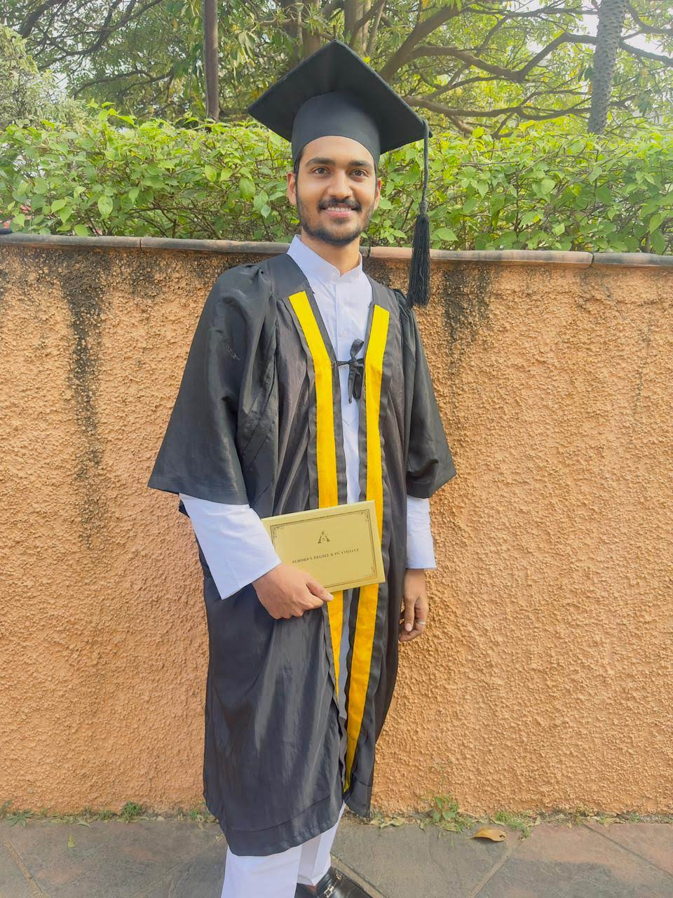

Engineering molecules at the frontier of structural biology — and reimagining what affordable diagnostics can look like for the world.
I'm a biotechnology researcher working across two labs at the University of South Florida — the Yu Chen Lab (structural biology & drug discovery) and the Thao Ho Lab (gut biology & clinical research).
My work spans SARS-CoV-2 Mpro and EV-A71 2C protein crystallography, structure-based virtual screening against BBPSTS, GPSB, and ZBP1 targets, and iron metabolism studies in neonatal intestinal organoids using clinical faecal and serum samples.
I'm driven by a long-term vision of building affordable AI-driven genomic diagnostics — detecting disease risk before symptoms appear, using sequencing patterns, mutation rates, and ML to generate personalized health insights.
Outside the lab, I practice yoga, meditation, and Vedic philosophy. I'm fascinated by the bridge between ancient pattern-based systems and modern predictive biology. I'm actively pursuing PhD opportunities while building toward entrepreneurship.
Crystallizing SARS-CoV-2 Mpro mutants (E166V, E166V/T169S, L50F) and Enterovirus A71 (EV-A71) 2C ATPase/helicase mutants — a validated broad-spectrum antiviral target. Optimizing conditions, seeding, and preparing for synchrotron beamline data collection.
Structure-based virtual screening against BBPSTS, GPSB, and ZBP1 targets. Building automated Python/Linux ML/DL-integrated docking pipelines for high-throughput pose filtering, matching spheres, and dielectric optimization for lead identification.
Clinical faecal and serum sample processing for iron metabolism and microbiome studies via qPCR, RT-PCR, and ELISA. Iron exposure studies on neonatal intestinal enteroids — immunofluorescence staining, gene expression analysis, and prostaglandin quantification.
Executed a 6-color multicolor panel to analyze B-cell maturation (IgD) and immune activation (CD69) in whole blood samples. Full workflow: antibody staining, RBC lysis, gating strategy development, fluorescence compensation, FlowJo analysis.
Banavasi V.K.R. — International Journal of Pharmaceutical Research and Applications, Vol. 10, Issue 2, pp. 344–348. ISSN: 2456-4494.
DOI: 10.35629/4494-1002344348
Banavasi V.K.R. — International Journal of Pharmaceutical Research and Applications, Vol. 10, Issue 2, pp. 349–353. ISSN: 2456-4494.
DOI: 10.35629/4494-1002349353
"Science and spirituality are not opposites — they are two languages describing the same underlying patterns of the universe."
My entrepreneurial vision: an affordable AI-driven platform that uses gene sequencing, mutation patterns, and ML to detect disease risk before symptoms emerge — giving every person a probabilistic health map and personalized lifestyle guidance.
Vedic astrology is fundamentally mathematical — cyclical patterns, probability, timing. I'm personally exploring whether its pattern-recognition framework can serve as a complementary lens alongside genomics for predicting health trajectories. An unconventional add-on to the science.
Actively seeking PhD opportunities in structural biology, computational drug discovery, or genomics — to build the scientific foundation that bridges bench research with translational innovation. Target programs: Scripps, UCSF, UW Seattle.
I practice yoga, meditation, and draw deeply from Vedic philosophy. I'm a competitive badminton player at USF and a district-level swimmer. If I weren't a scientist, I'd be a healer and therapist. I believe the best science comes from a balanced, grounded mind.
Open to PhD opportunities, industry roles, research collaborations, and meaningful conversations.